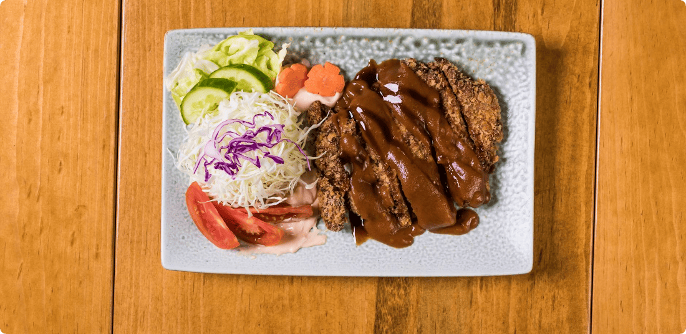

Miso Katsu
Miso Katsu is the undisputed "King of Nagoya Meshi." While Tonkatsu (fried pork cutlet) is popular across Japan, Nagoya transforms it by replacing the standard tangy sauce with a thick, rich sauce made from Hatcho Miso. This dish is a perfect marriage of textures and flavors: the earthy, slightly sweet, and savory depth of the fermented bean paste coats the crispy, golden-fried pork, creating a heavy-hitting flavor profile that is addictive and satisfying.
Key Highlights
- • The Hatcho Miso Sauce: Visually striking with its deep brown color, the sauce is savory (umami-rich) and less sweet than white miso. When combined with mirin and sugar, it develops a profound richness that soaks into the meat.
- • Texture Contrast: The breading (panko) remains surprisingly crispy despite being drenched in the thick sauce, while the pork inside remains juicy.
- • Why Try It: It represents the bold palate of the region. If you find standard Tonkatsu a bit dry or plain, the savory kick of Miso Katsu will completely change your perspective.

How to Experience
- • Eating Style: Usually served as a Teishoku (set meal) with rice, miso soup, and shredded cabbage. A dab of karashi (yellow mustard) is often added to cut through the richness.
- • Variations: Apart from the standard plate, try "Miso Katsudon" (served over a bowl of rice) or as a sandwich filling.
Practical Info
Best Time: Perfect for a hearty lunch or a filling dinner to recharge.
Price Range: 1,200 - 2,000 JPY.